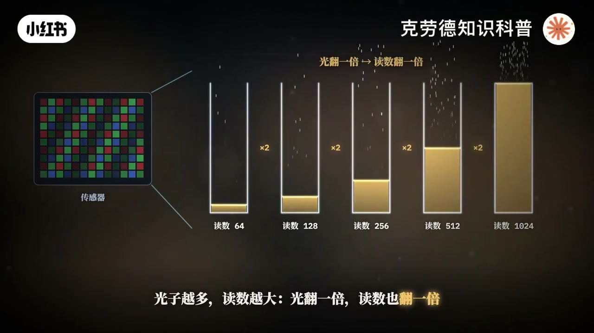
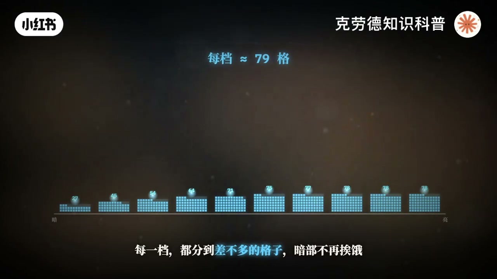
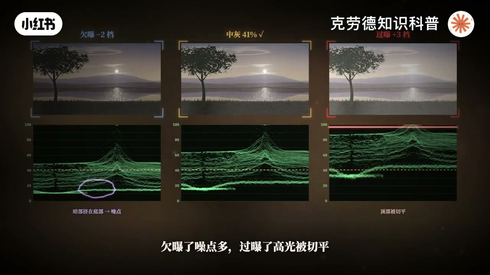
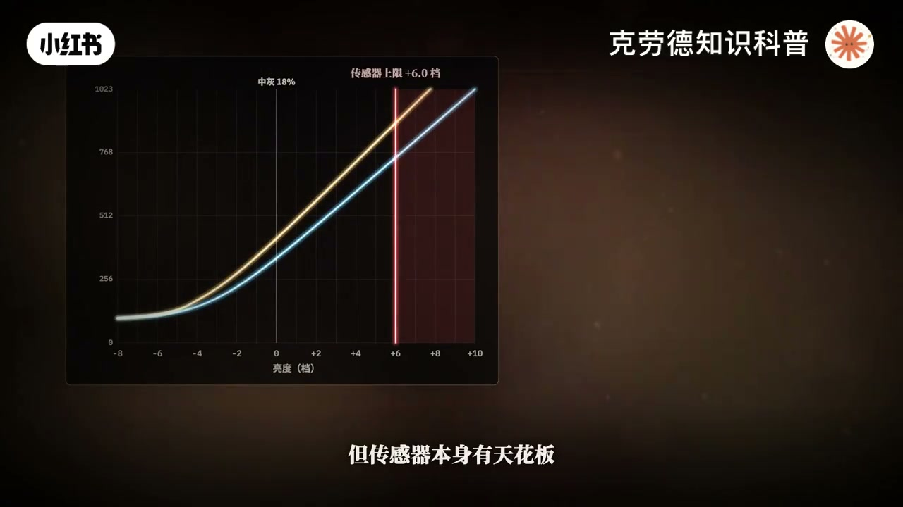
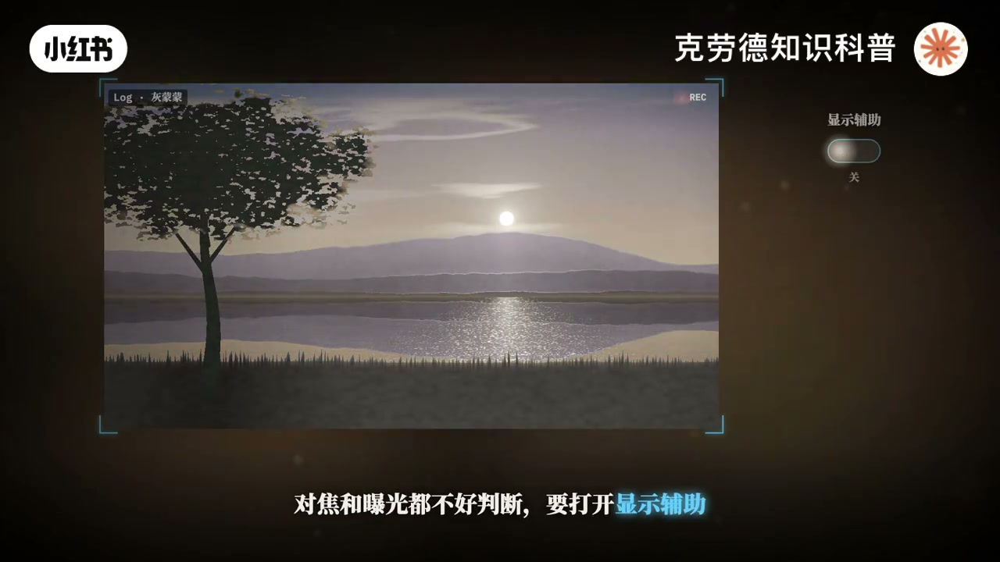
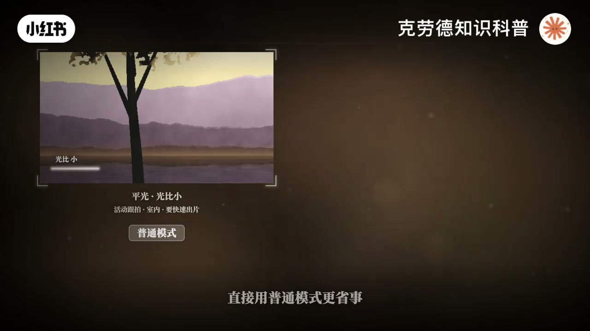
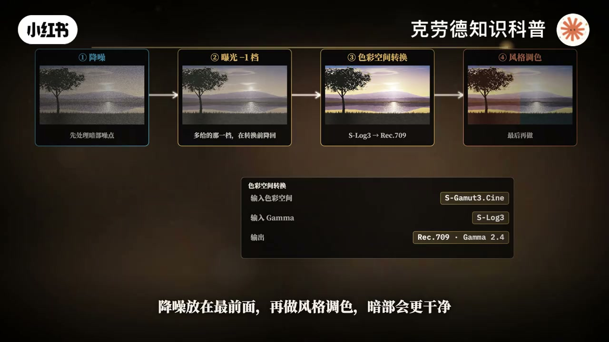
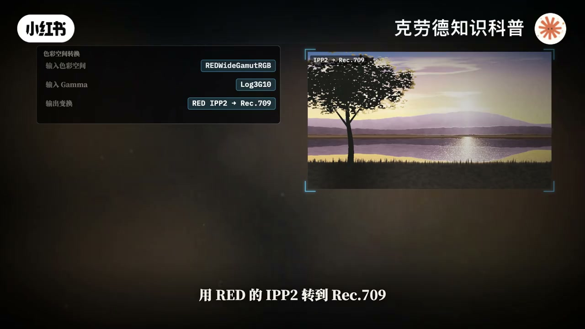

内容要点
「相机视频录制Log模式是什么？Slog3曲线原理」教程要点：同一个画面里,逆光的太阳比树荫底下亮了一万多倍。 → 可一段十倍的视频,每种颜色只有1024个台阶, → 一万多倍的明暗要怎么装进这一千多格里? → 答案就是Loud曲线。；详见
知识结构
同一个画面里,逆光的太阳比树荫底下亮了一万多倍。
右边是RED的LOCK3G10,中晖只在三分之一,往上流足了10档。
第二,LOCK按中灰和波形来曝光,画面看着偏灰,还是正常的。
- 同一个画面里,逆光的太阳比树荫底下亮了一万多倍。
- 可一段十倍的视频,每种颜色只有1024个台阶,
- 一万多倍的明暗要怎么装进这一千多格里?
- 答案就是Loud曲线。
- 先看传感器,每个像素就像一只接光的小桶,
同一个画面里,逆光的太阳比树荫底下亮了一万多倍。
00:00–01:48同一个画面里,逆光的太阳比树荫底下亮了一万多倍。
同一个画面里,逆光的太阳比树荫底下亮了一万多倍。；可一段十倍的视频,每种颜色只有1024个台阶,；一万多倍的明暗要怎么装进这一千多格里?；答案就是Loud曲线。；先看传感器,每个像素就像一只接光的小桶,；光子落进来,就被数下来。；光子越多,毒树越大,光翻一倍,毒树也翻一倍,这就叫线性。；摄影里,亮一档就是光多一倍。；如果按光量的比例直接存,最亮的那一档一口气就占一半,512格。；往下每暗一档,格子就在减半到最暗的几档,只剩下一格、二格。；调色时,想把暗部提亮一点,原本平滑的渐变就碎成一道道台阶,这就是断层。；可人也不是这样看的,我们感受的是倍数,一变二和一千变两千,看起来都只是亮了一截。；对数正好对上人眼,它不管多了多少光,只问一件事,翻了几倍。；一、二、四、八,每翻一倍就往前走同样的一步。；LOCK曲线就是这么存的,不按光量分格子,按档分,每一档都分到差不多的格子,暗部不再矮。；化成曲线,中间是一段直线,每亮一档,数值就涨同样多,18%的灰卡落在偏下的位置。；所以LOCK拍出来的画面是灰的,一万多倍的明暗全被压进了中间这一段。；到调色时,再把它还原回来,高光和暗部都还在。；代价也很直接,把格子按档均分之后,每一档能分到多少。；8-bit只有20个左右,10-bit大约79个。；所以PILOT一定要用10-bit。；暗部被抬起来,藏在里面的噪点也一起被看见了。；所以LOCK模式的起步ISO往往比普通模式高。；曝光也要按曲线规定的中晖来给,欠曝了噪点多,过曝了高光被窃屏。；左边是索尼S-LOCK3,中晖在420,大约41%。


01:49–03:32右边是RED的LOCK3G10,中晖只在三分之一
右边是RED的LOCK3G10,中晖只在三分之一,往上流足了10档。；尼康Z2更新固件2.0之后,LOCK3G10也能直接录成H,265 10-bit。；两边都是10-bit,差别就只剩曲线本身。；叠在一起看,S-LOCK3中晖更高,曲线更陡。LOCK3G10更平缓,把空间留给了高光。；中间调,S-LOCK3每档有79格,LOCK3G10是69格。；往暗部数到第5档,38格对23格。；高光纳头,S-LOCK3到中晖以上7.7档就用完了,LOCK3G10能撑到10档。；但传感器本身有天花板。；如果上线在中晖以上6档,S-LOCK3能用上791格,LOCK3G10只用到653格。；只有上线超过7.7档,S-LOCK3才会先被切掉。；最容易踩的坑,两条曲线的中晖位置不一样。；拿S-LOCK3的41%曲爆LOCK3G10等于过曝了大约1.3档。；动态范围由传感器决定,两台都标称15档以上。；420只是颜色分辨率低一些,明暗台阶只看倍数和曲线。；所以S-LOCK3把格子花在中间调和暗部,LOCK3G10把余量留给了高光。；拍不拍LOCK,前期的差别从取景器就开始了。；普通模式下,屏幕上看到的就是成片。；拍LOCK,画面灰蒙蒙的,对焦和曝光都不好判断。；要打开显示辅助,套一个还原的LUT来看。；注意,显示辅助只改屏幕,录下来的依然是LOCK。；第二是感光度,普通模式能从ISO100拍起。；LOCK的起步往往就是800,足足高了三档。；大晴天想开大光圈,快门又要守住50分之一秒,；就得加一片ND8减光镜,把这三档光压回去。；第三是曝光标准,普通模式按眼睛看着舒服来曝光,高光一过就白掉。


03:34–05:34第二,LOCK按中灰和波形来曝光,画面看着偏灰,
第二,LOCK按中灰和波形来曝光,画面看着偏灰,还是正常的。；白平衡也要拍准,录H265这类压缩格式,白平衡是烧进文件里的。；后期大幅修正,颜色容易出断层。；所以,光比不大,要快速出片的时候,比如活动跟拍,室内屏光,直接用普通模式更省事。；遇到逆光,日落这种大光比,或者后期要认真调色,再拍LOCK。；落到实拍,先说SLOCK3。；ISO从原生的800起步,光线暗了,就切到另一档原生的12800。；灰卡按41%曝光是标准,只要高光不易出,可以再多给一档,让灰卡到49%左右。；多给的这一档,后期再压回来,暗部的噪点会干净一点。；同时盯住波形顶端,一旦被削成一条平线,那里就没有数据了。；SLOCK3的后期,第一步是色彩空间转换,输入选拍摄时用的色域和SLOCK3输出REC709。；前期多给了一档,就在转换之前,先把曝光降回一档。；降噪放在最前面,再做风格调色,暗部会更干净。；再看LOCK3G时,尼康Z2并没有改这条曲线,它和RED电影机用的是同一条LOCK3G时,后期流程才能通用。；灰卡按33%曝光。；在ISO800下,传感器大约在中灰以上6-7档就到顶,波形只到7成多,最上面两三档曲线确实用不上。；所以Z2从固件1.10起,在波形上加了一条红色裁切线,让最亮的部分贴着红线下面,就是曝光的上限,不用去追100%。；想用上更多高光空间,可以把ISO往上调。；中灰位置不变,传感器的顶会跟着往上移,代价是暗部噪点更多。；LOCK3G时的后期,输入选REDWIDE GAMET RGB和LOCK3G时,用RED的IPP2转到REC709。；SLOCK3的LUT和预设不能直接套,两条曲线每一档的数值都不一样。；它的暗部格子更少,又经过H265压缩,深暗部别硬拉,剪辑卡顿就先转成代理文件。；所以,你更怕断层,还是更怕国宝?




口述/画面要点（40段）
结合 Whisper medium 与画面大字整理；专有名词已校对。
同一个画面里,逆光的太阳比树荫底下亮了一万多倍。
可一段十倍的视频,每种颜色只有1024个台阶,
一万多倍的明暗要怎么装进这一千多格里?
答案就是Loud曲线。
先看传感器,每个像素就像一只接光的小桶,
光子落进来,就被数下来。
光子越多,毒树越大,光翻一倍,毒树也翻一倍,这就叫线性。
摄影里,亮一档就是光多一倍。
如果按光量的比例直接存,最亮的那一档一口气就占一半,512格。
往下每暗一档,格子就在减半到最暗的几档,只剩下一格、二格。
调色时,想把暗部提亮一点,原本平滑的渐变就碎成一道道台阶,这就是断层。
可人也不是这样看的,我们感受的是倍数,一变二和一千变两千,看起来都只是亮了一截。
对数正好对上人眼,它不管多了多少光,只问一件事,翻了几倍。
一、二、四、八,每翻一倍就往前走同样的一步。
LOCK曲线就是这么存的,不按光量分格子,按档分,每一档都分到差不多的格子,暗部不再矮。
化成曲线,中间是一段直线,每亮一档,数值就涨同样多,18%的灰卡落在偏下的位置。
所以LOCK拍出来的画面是灰的,一万多倍的明暗全被压进了中间这一段。
到调色时,再把它还原回来,高光和暗部都还在。
代价也很直接,把格子按档均分之后,每一档能分到多少。
8-bit只有20个左右,10-bit大约79个。
所以PILOT一定要用10-bit。
暗部被抬起来,藏在里面的噪点也一起被看见了。
所以LOCK模式的起步ISO往往比普通模式高。
曝光也要按曲线规定的中晖来给,欠曝了噪点多,过曝了高光被窃屏。
左边是索尼S-LOCK3,中晖在420,大约41%。
右边是RED的LOCK3G10,中晖只在三分之一,往上流足了10档。
尼康Z2更新固件2.0之后,LOCK3G10也能直接录成H,265 10-bit。
两边都是10-bit,差别就只剩曲线本身。
叠在一起看,S-LOCK3中晖更高,曲线更陡。LOCK3G10更平缓,把空间留给了高光。
中间调,S-LOCK3每档有79格,LOCK3G10是69格。
往暗部数到第5档,38格对23格。
高光纳头,S-LOCK3到中晖以上7.7档就用完了,LOCK3G10能撑到10档。
但传感器本身有天花板。
如果上线在中晖以上6档,S-LOCK3能用上791格,LOCK3G10只用到653格。
只有上线超过7.7档,S-LOCK3才会先被切掉。
最容易踩的坑,两条曲线的中晖位置不一样。
拿S-LOCK3的41%曲爆LOCK3G10等于过曝了大约1.3档。
动态范围由传感器决定,两台都标称15档以上。
420只是颜色分辨率低一些,明暗台阶只看倍数和曲线。
所以S-LOCK3把格子花在中间调和暗部,LOCK3G10把余量留给了高光。